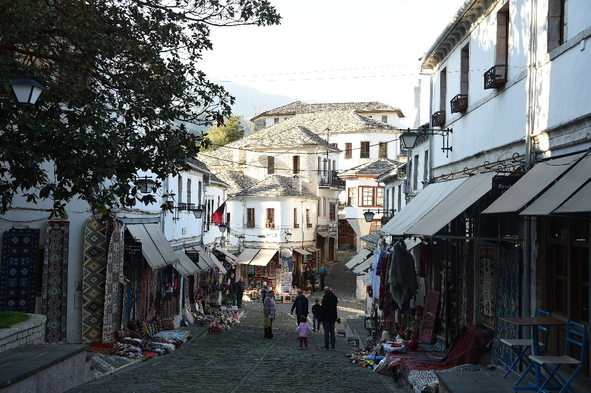
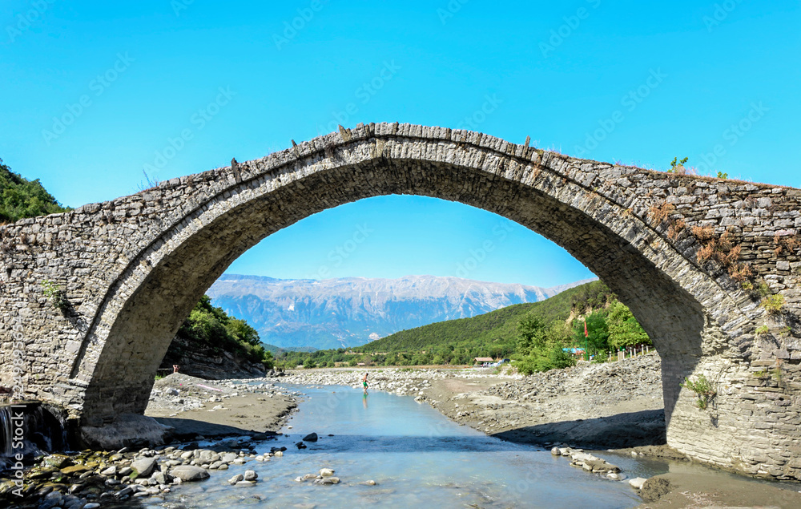
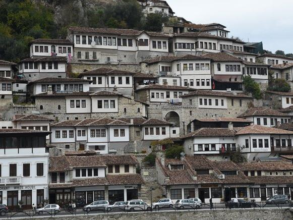
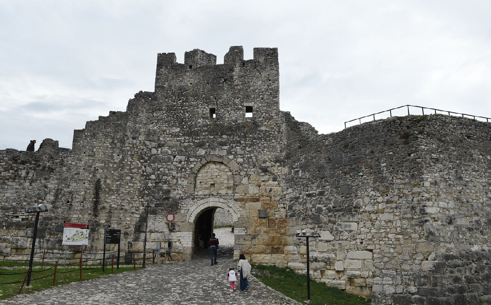
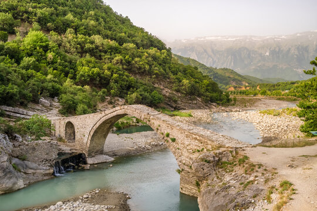

OSMANLIDAN KALAN BİR KASABA: ERGİRİ
Osmanlı izleri taşıyan Arnavutluk’un taş şehri Ergiri tarihin tanığı olmuş, özgün taş ev ve
sokaklarıyla ziyarete değecek bir Balkan durağıdır.
Ergirikasrı olarak da bilinen şehrin nüfusu 20 bin kişidir. Ergiri, tarih kayıtlarına ilk kez 1336
yılında Argirokastro
adıyla Bizans İmparatorluğu'nun bir parçası olarak geçmiştir.

Kalesi, evleri, kaldırımlı dar sokakları ile ziyaretçilerini tarihi bir atmosfere sokan şehrin
önemli yapıları Çarşı Camii,
Aya Maria Kilisesi, Kalesi ve Etnografya Müzesidir. Ergiri, eski komünist lider Enver Hoca ile ünlü
yazar İsmail Kadare'nin doğum yeridir.

Bu köprü aynı zamanda Yargıç köprüsü olarak da bilinir. Türkçe "Katiut" kelimesi
"yargıç" anlamına gelir ve Arnavutluk Türk işgali altındayken bir yargıcın köprüden düşerek
öldürüldüğüne dair bir hikaye vardır. Köprünün ismini bu hikayeden aldığı söylenir.
Çoğunlukla çakmaktaşı aletler ve çanak çömlek parçalarından oluşan bölgede kaydedilen en eski
arkeolojik izlerin Neolitik (MÖ 7000-3000) ve Eneolitik (MÖ 3000-2100) dönemlerine ait olduğu
anlaşılmaktadır ve yakınlardaki mağara yerleşimlerinde kaydedilmiştir. Benje köyü, Vjosa Nehri'nin
zengin bir kolu olan ve güneydoğu yönünde yaklaşık 2 km uzaklıktaki Lengarica'nın kayalık
kanyonlarında yer almaktadır. Nemerçka Sıradağları eteğindeki Dedejan surlarında Tunç Çağı (M.Ö.
2100-1100) ortaya çıkarken, Piskova köyündeki tarlalarda yapılan tarım çalışmaları sırasında aynı
döneme ait başka buluntu noktaları da keşfediliyor.

1417 yılında da Osmanlı İmparatorluğu hakimiyeti altına giren Ergiri, Balkan Savaşları sırasında
Yunan ordusu tarafından işgal edilse de 1913'te yeni bağımsız
Arnavutluk devletine verilmiştir. Ergiri'nin eski şehir merkezi nadir bir iyi korunmuş Osmanlı
kasabası örneği olarak 2005 yılında UNESCO Dünya Mirası Listesi'ne dahil edilmiştir.
Evleri ve sokakları sadece taştan oluşan Ergiri, bu özelliğinden ötürü 'taş şehir' olarak
tanımlanmaktadır.

Katiu Köprüsü
Katiu Köprüsü, Permet'e 8 km uzaklıkta bulunan 19. yüzyıldan kalma bir köprüdür. Ünlü lider Ali Paşa
Tepelena tarafından yaptırılan bu tipik Osmanlı köprüsünün küçük ve sevimli tarafında, nehrin
üzerinde zarif bir şekilde uzanan büyük bir kemer bulunur.Köprünün ortasına doğru yürüyerek nehrin
ve çevredeki kırsal alanın muhteşem fotoğrafları çekilebilir.
